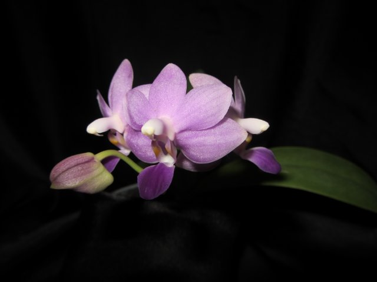

Phal. Purple Martin v.blue
Phal. Purple Martin v.blue гібрид Phal. Kenneth Schubert та Phal. violacea, відомий з 1989 року.
Phal. Kenneth Schubert - перший гібрид Phal. pulcherrima и Phal. violacea, отже в генах Phal. Purple Martin - 75% от Phal. violacea. В той же час варіанти цвітіння Phal. Purple Martin залежать від характеристик батьків, які приймали участь в селекції.
